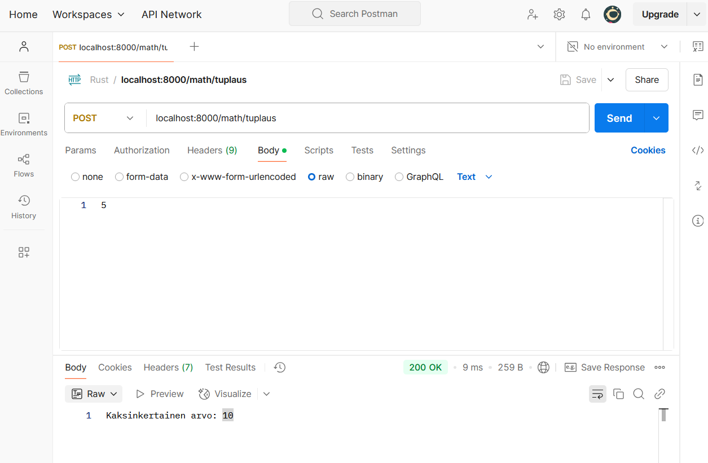

In this section, we will cover the backend implementation of web programming in Rust using the Rocket framework. We go through GET request, POST request, HTML data rendering, HTML form processing.
1. Using Rocket Framework
What is Rocket framework?
Rocket is a web application framework developed for the Rust programming language, which enables the creation of fast, type-safe web applications easily.Its intuitive APIs make it approachable for developers of all backgrounds. Rocket offers, among other things, form processing and JSON data processing.
If you are not into web programming, you can find more information about get and post requests and HTTP requests in general
here.
Using Rocket framework - GET Request
Let's look at using Rocket Framework through examples. Below is a new project whose main.rs file has been replaced with the code snippet below:
#[macro_use] extern crate rocket;
#[get("/hello/<name>")]
fn hello(name: String) -> String {
format!("Hey, {}!", name)
}
#[launch]
fn rocket() -> _ {
rocket::build().mount("/", routes![hello])
}
Let's go through the example code line by line.
Top row:
#[macro_use] extern crate rocket;
brings the attributes and macros used by Rocket such as #[get] and #[launch] into use. with the get macro we can make a get route.
#[get("/hello/<name>")]:
This attribute specifies the route and parameter:
/hello specifies the path in the URL.
<name> denotes a dynamic parameter that is included from the URL (eg /hello/Matti).
hello(name: String):
A function that handles a GET request. The name parameter corresponds to the value given in the URL and is automatically converted to String type by Rocket.
Return:
format!("Hey, {}!", name)
The function returns a string that is created with the format! macro. In this case, it greets the user based on the given name.
#[launch] and rocket::build():
This partlaunches the Rocket application:
rocket::build().mount("/", routes![hello])Attaches the hello path to the root path of the application ( / ).
When the application is run with the cargo run command, the application should be started. When you make a request to the address with a browser or API tool:
http://localhost:8000/hello/Matti
The answer should be:
Hey, Matti!
When you run the application, you should see a bunch of text in the console of the IDE you're using, of which one should be:
Rocket has launched from http://127.0.0.1:8000
Copy this sentence and go to that address in your browser. You should get a 404 error. Remember that you only made the route to the /hello/<parametri1> address, so put any name you want after the above address, such as /hello/opiskelija. In this case, you should see the text:

And your console should have something similar:

The response from the server, our program, was successful, the r
esponse code was
200, and the program recognized that we made a request to the /hello/student address.
Note that the parameter name of the get-route function must be the same as the parameter we use in the route. In the case of our example, we use <name> in our route, and name as a parameter to our function.
Rocket-framework documentation page
2. HTML Rendering
HTML rendering
We can show the data to the user better in HTML format using the RawHtml module of the Rocket framework.
#[macro_use] extern crate rocket;
use rocket::response::content::RawHtml;
#[get("/<page_name>")]
fn render_page(page_name: String) -> RawHtml<&'static str> {
let content = match page_name.as_str() {
"welcome" => "<h1>Welcome!</h1><p>Happy to see you here.</p>",
"about" => "<h1>About us</h1><p>We are a Rocket example app.</p>",
_ => "<p>Page not found.</p>",
};
RawHtml(content)
}
#[launch]
fn rocket() -> _ {
rocket::build().mount("/page", routes![render_page])
}
In order to be able to display data in HTML format to the user, we need to return a value of type RawHTML that contains the HTML we want. As we can see, our function has a return type of RawHTML, and in order for the program to work, we must also set the lifetime for our return value.
Why use the keyword 'static?
Since RawHtml returns a reference (&str) to the HTML content, the program must ensure that it does not attempt to use freed memory. 'static ensures that the returned HTML is always present during program execution.
Sample run
When we run the code above, we get two sub-routes to the /page route, /welcome and /about. When we go to /about, we get a view like this:
As we can see, the information we send is rendered according to the HTML information we provide. "Tietoa meistä" is in the H1 element, and "Olemme Rocket-esimerkkisovellus." -text is inside the p-element. You can find a list of different HTML elements here.
The most common elements are:
- h1 ... h6 defines the header and its size
- p normal text sections go inside this element
- div is used to compartmentalize different sections in grouping
- form a form format that can contain several different elements such as button, input
- there are many different options for the input type, such as checkbox, submit, radio, range
2.1. Form-input
Example of using form
Below is sample code for rendering a form using the RawHtml function. We define input elements inside the form, giving them the types we want.
#[macro_use]
extern crate rocket;
use rocket::form::{Form, FromForm};
use rocket::response::content::RawHtml;
#[derive(FromForm)]
struct UserInput {
name: String,
age: u32,
}
#[post("/submit", data = "<user_form>")]
fn handle_form(user_form: Form<UserInput>) -> String {
let user = user_form.into_inner();
format!("User: {} ({}) years old", user.name, user.age)
}
#[get("/form")]
fn form_page() -> RawHtml<&'static str> {
let rendered_page: &str = r#"
<form action="/submit" method="post">
<label for="name">Name:</label>
<input type="text" id="name" name="name" required>
<br>
<label for="age">Age:</label>
<input type="number" id="age" name="age" required>
<br><br>
<input type="submit" value="Submit">
</form>
"#;
RawHtml(rendered_page)
}
#[launch]
fn rocket() -> _ {
rocket::build().mount("/", routes![form_page, handle_form])
}
We use new features from the Rocket library - Form, and FromForm. The #[derive(FromForm)] attribute enables automatic filling of a Rust structure - struct - from form data using Rocket.
How does it work?
Rocket parses the fields received from POST or GET form requests and fills them into the corresponding fields of the structure. The names match the names of the fields in the HTML form.
#[derive(FromForm)]
struct UserInput {
name: String,
age: u32,
}
The UserInput structure above receives the following HTML form fields:
<form action="/submit" method="post">
<input type="text" name="name">
<input type="number" name="age">
</form>
Validation
If the form data is missing, doesn't match, or contains the wrong type of value (e.g. text in a number field), Rocket returns an error related to form processing.
Form Data Guard
Form<UserInput> is a data guard provided by Rocket that ensures that the form data is in the correct format and can be converted to the defined Rust structure.
How does Form work?
Rocket automatically reads the form data from the body of the HTTP request, performs the FromForm conversion, and if the conversion is successful, provides access to the data structure.
- data = "<user_form>" tells Rocket that it expects to receive data to be stored in the user_form variable
- Form<UserInput> reads and checks the data
- user_form.into_inner() returns the actual UserInput structure for processing.
After this, the variable user in our example is an instance of the UserInput type, whose fields name and age we can call normally:
user.name
user.age
Example run
Below we see how the program works.
We render the page's form to the /form-route, send the data to the /submit-route, and when we send the data, we get to another page.
3. POST-request and Postman tool
What is Postman?
Postman is a free API tool that lets you, for example, test HTTP routes, send data to these routes and see what you get in response.
Since POST routes require data inside the body, just using a browser doesn't give us an easy way to test our POST routes.
You can find Postman's user manual
here.
You can find the Postman Agent installation link
here. Postman Agent works in such a way that you can send and receive requests when Postman Agent is installed and you have created an account in Postman.
Testing your routes through a service like Postman is not mandatory, but it makes your programming tasks easier.
How can I do a POST request?
Below we see a picture where a POST request is sent via a new request to the address localhost:8000/math/doubling.
We have chosen the data type of the body to be raw so that we can send the text as it is. In our example, we send the value 5, in text format.
Below we see the response code, 200, as well as the text response:
Doubled value: 10
Below we see the code we used to get the above post-route done.
#[macro_use] extern crate rocket;
#[post("/doubling", data = "<number>")]
fn double_number(number: String) -> String {
match number.trim().parse::<i32>() {
Ok(value) => format!("Doubled value: {}", value * 2),
Err(_) => String::from("Give a proper float value!"),
}
}
#[launch]
fn rocket() -> _ {
rocket::build().mount("/math", routes![double_number])
}
We send the data in somewhat the same style inside the #[post] macro as in the #[get] macro, but we don't define the parameter inside the url address, we give it separately.